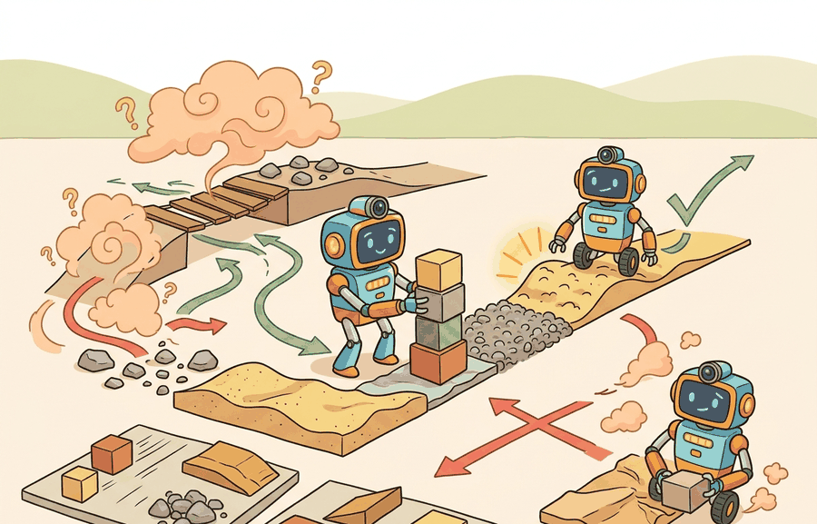

For Robustness and generalization metrics, a benchmark conclusion survives reruns only when the panel, seed policy, exclusion rules, and raw episode artifacts are inspectable.
An Evaluation Methodologist
A warehouse robot completes 97% of pick-and-place trials in the lab. On its third week of deployment, a spilled bag of rice scatters across two aisles and the robot freezes, having never encountered that texture distribution. The 97% figure was true and useless. As embodied systems move from curated benchmarks into the physical world, the gap between average performance and worst-case behavior is the gap between a product and a liability. You will learn to quantify that gap with shift-sensitive and tail-risk metrics, design perturbation panels that expose brittleness before deployment does, and read a robustness report that tells you whether a policy gain is real or just a clean-condition artifact.

This section assumes familiarity with the basic evaluation protocol introduced in section 52.1 and the rollout panel design covered in section 52.2. The robustness framing developed here feeds directly into section 53.1 (disturbance classes) and section 53.3 (out-of-distribution detection), where perturbation taxonomies and uncertainty quantification extend these metrics into a full safety evaluation pipeline.
Why This Matters
Robustness and generalization metrics matters because evaluation choices rewrite the scientific claim. If the metric drops time, energy, or safety terms that the deployment team cares about, the benchmark no longer matches the real decision.
A compact robustness report can include the clean score $J_{clean}$, the mean shifted score $J_{shift}$, and the tail-risk statistic $$\text{CVaR}_{\alpha}(L) = \mathbb{E}[L \mid L \ge q_{\alpha}],$$ where $L$ is loss and $q_{\alpha}$ is the upper-tail quantile. This keeps average and worst-case behavior visible together.
Generalization is not a single number. It has at least three faces: interpolation to new task instances, robustness to nuisance perturbations, and behavior under truly out-of-support states.
- Partition the rollout panel into clean, interpolated, shifted, and stress-test slices.
- Compute average performance on each slice and a tail-risk statistic on the hardest slice.
- Report confidence intervals per slice, not only globally.
- Store enough metadata to recreate which perturbation family produced each tail event.
- Rank models only after checking whether one model's gain is just a clean-slice artifact.
Worked Example
Two drone policies can tie on average mission success while differing dramatically on gust-heavy scenes. The difference may only appear in the worst decile of episodes, which is why tail metrics matter.
losses = [0.1, 0.2, 0.25, 0.3, 0.35, 0.9, 1.1, 1.4]
alpha = 0.75
threshold_index = int(alpha * len(losses))
q_alpha = sorted(losses)[threshold_index]
tail = [x for x in losses if x >= q_alpha]
cvar = sum(tail) / len(tail)
print({"q_alpha": q_alpha, "cvar": round(cvar, 3), "tail_count": len(tail)}){'q_alpha': 0.9, 'cvar': 1.133, 'tail_count': 3}The alpha parameter in CVaR is not a free tuning knob: set it to match the failure-cost structure of your deployment. For warehouse robots where any collision triggers a safety audit, use alpha=0.95 or higher so the statistic reflects only the most severe episodes. Using the default alpha=0.75 from exploratory code in production reports will mask the worst 5 percent of outcomes and understate tail risk by a factor of two or more on heavy-tailed loss distributions. A quick sanity check is to recompute CVaR at both 0.75 and 0.95: if the two values differ by more than 30 percent, the tail is heavy enough that your choice of alpha changes the policy ranking.
Expected output: The output identifies the tail threshold and the mean of the worst episodes. A large gap between average loss and CVaR signals brittle behavior hidden by nominal aggregates.
Use a dataframe pipeline plus SciPy or NumPy quantile utilities for production analysis. The important part is not the software, but that clean, shifted, and tail slices are all computed from the same stored episodes.
Robustness and generalization require stratified panels rather than one pooled score. Pandas separates lighting, geometry, payload, terrain, object, and operator factors; SciPy evaluates paired deltas inside each stratum; DVC freezes the panel; and ROS 2 bags keep the physical context for every out-of-distribution claim.
Embodied robustness work benefits from treating perturbation families as experimental factors. Lighting shift, texture shift, actuation delay, and friction change should each have their own slice before they are rolled into an aggregate robustness view.
The useful artifact here is a generalization matrix whose rows are perturbation families and whose columns are task success, constraint margin, latency, and recovery. It prevents interpolation wins from being confused with true operating-envelope expansion.
A common benchmark error is to mix interpolation and true OOD states into one bucket called generalization. That makes it impossible to tell whether the model fails because of modest novelty or because the state is physically outside the training support.
Several concrete efforts illustrate what structured perturbation panels look like in practice. RobustBench (Croce et al., 2021) catalogs vision-model robustness across 19 corruptions at 5 severity levels and shows that ImageNet-C accuracy and clean accuracy move almost independently across architectures. In locomotion, the Isaac Gym transfer suite (Rudin et al., 2022) distinguishes terrain interpolation, friction randomization, and payload shift as separate test axes rather than averaging them, revealing that policies trained with domain randomization often trade clean-floor peak performance for tail safety on disturbed terrain. Naming the perturbation family and its severity level is what separates a reproducible claim from an anecdote.
Use the mean shifted score ($J_{shift}$) when you need to compare two policies across a broad distribution of conditions and the failure cost is roughly uniform. Switch to CVaR when failures are catastrophic and rare: a warehouse mobile robot that collides once in a thousand runs may still have an acceptable mean score but an unacceptable CVaR. As a rule of thumb, if a single worst-case episode would cause hardware damage, injury, or a safety audit finding, CVaR at $\alpha \ge 0.90$ should appear in every results table alongside the mean. When failure cost is uniform and bounded, mean-shift comparisons are sufficient and easier to communicate to non-specialist stakeholders.
Cross-References
This section prepares the ground for Section 53.1 on disturbance classes and Section 53.3 on OOD detection.
Take one existing evaluation table and split it into clean, shifted, and stress-test slices. Add a CVaR column and compare whether the method ranking changes.
Do not declare a model robust because it survived one handpicked perturbation family. Robustness claims require coverage across perturbation classes and disclosure of where the model remains weak.
For a humanoid locomotion controller, clean floors, mild friction changes, and severe friction drops should appear as separate rows. The right policy may be worse on average but far safer in the tail.
Current research is moving toward richer perturbation taxonomies, compositional shift panels, and benchmark artifacts that keep the perturbation generator itself versioned and auditable.
Can you distinguish the average shifted score from a tail-risk statistic like CVaR? If not, your robustness vocabulary is still too coarse.
Generalization metrics should preserve clean, shifted, and worst-case structure. One average score is rarely enough for embodied deployment decisions.
Define a robustness report for one robot task with at least three perturbation families and one tail metric. Explain which deployment question each slice answers.
A policy that gets 90 percent on clean scenes and 12 percent in rain is not a robustness story. It is a weather forecast with expensive consequences.
Section References
Ovadia, Y. et al. "Can You Trust Your Model’s Uncertainty? Evaluating Predictive Uncertainty Under Dataset Shift." (2019). https://arxiv.org/abs/1906.02530
A helpful bridge between shift evaluation and calibrated uncertainty.
Agarwal, R. et al. "Deep Reinforcement Learning at the Edge of the Statistical Precipice." (2021). https://arxiv.org/abs/2108.13264
Useful for careful metric aggregation and confidence intervals.
Section 52.5 now asks when simulation can stand in for physical evaluation and what evidence is needed to justify that proxy.